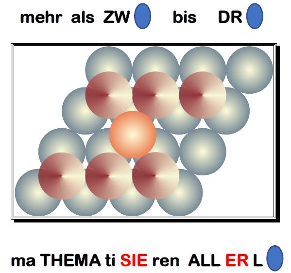
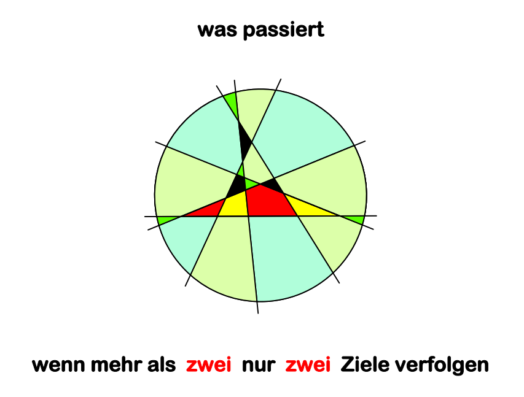

Jeden Monat neue Rätsel mit Bezug zur aktuellen Jahreszahl
Verantwortlich für diese Seite ist Peter Hammer, Mathematiker und Rätselspezialist.
Er spielte zehn Jahre in der Schweizer Schach-Nationalmannschaft und betreute über viele
Jahre hinweg Denksportspalten in vielen Tageszeitungen.
Die Dateien liegen im pdf-Format vor.

